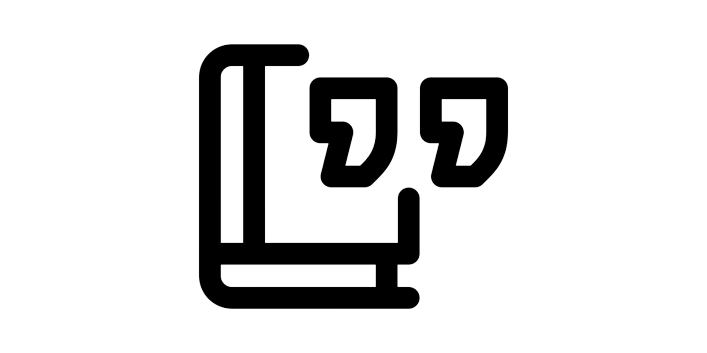

Paume
Site de « Recherche-Création sur l'épaisseur de l'écriture »
cc by-sa 4.0 2023 Margot Mellet
non-responsive
Structure
Commencement
Une composition des rapports
La fileuse
La répartitrice
L’inflexible
L’exorcisme comme programme
5 comme les doigts d’une main
Notes sur ce qui suit
Des images comme des aveux
Les mains techniques
L’aveu des images
Références
La Fabrique
La fabrique de la fabrique
Un jour, l’
Homo faber sapiens
La barbe érudite
Capital cognitif
Entouré de machines
Au travers du faire
La fabrique d’une littérature
Espace sous presse
Les frontières de la forme
L’écriture est dans le pré
Sur les sentiers d’une littérature
La fabrique d’une thèse
Les chères écritures numériques
Le corpus en fleur
L’obsession des graphs
La paume écrite
Obturer la fabrique
Références
Le Média
In media res
Media rasa
L’entre-deux
L’entre de l’entre
Media muta
Media rosa
La ronde autour de l’entre
Encore un tour de médiation
Hors de la carte
Media imago
Media morpha
La stigmergie des forces
L’irrémédiable
Au bord des falaises du média
La Machine
La mécanique de l’écriture
La matrice du texte
La fracture de l’organique
La frappe aveugle
Dans la boule de Nietzsche
Machines modèles
Machinations poétiques
La contrainte créative
La machine qui écrivait un sonnet
Au potentiel hasard des mots
La vue perçante
Épuisement d’une mécanique
Les inventions littéraires de la machine
De bonnes machines
Les épouses de la plume
La femme parfaite est une machine de mots
Le cyborg réécrit
La ruse
La Page
À la page
Fibres des traces
Perdre la ligne
Lieu du signe
Le cadre et le corps implosés
Physiologie des traces
Espace des respirations
La ligne retrouvée
Le travers de la page
Page paysage
Page blanche
Page peau
Page écran
Page-planche
La page et l’idée
La Matière
Matières à écrire
La plume qui était marteau
Les strates de l’onde
Juste sous la pointe
L’autre écrit
Embrassements du signe
La trace à rebours
L’épaisseur du blanc
Image écrite
La quête du geste
À la rencontre des incidences
Recouvre
Performe
Détourne
La matière plate
Dénouement
Dans la paume
Le regret un peu
Le Nœud
|
Au creux
|
Articulations des phalanges
|
Doigts de la main
|
Chutes
|
Dans les plis
|
